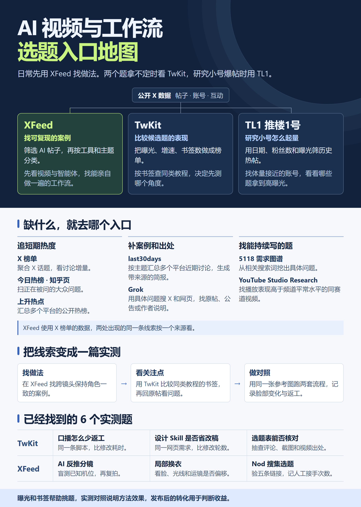

比较同类帖
TwKit
- 原理
- 把收录帖子和账号的公开互动做成排行。长文榜可以按书签或曝光排序，推文榜也有按曝光增速看的入口。
- 价值
- 比较教程、案例和工作流拆解的收藏表现，帮助你在几个相近选题中选一个先做。
- 怎么用
- 长文榜选「AI 科技」和近 7 天，按书签排序，再对照题材、发布日期和作者体量。

日常用 XFeed 找做法，选题难取舍时看 TwKit，研究小号爆帖时用 TL1。
TwKit 的书签数来自当时读到的榜单快照。每个选题都附了原始线索、测试步骤和记录指标。
Eian 的六步代码出片工作流。TwKit 快照中有 1,909 个书签。
TwKit 长文榜收录的 Miles Ma 多模态数据清洗案例，涉及文字、图片和视频证据的整理。
XFeed 收录的 Higgsfield Miracle 演示。官方展示的是视频局部编辑，产品页目前标为早期测试。
先判断你手上缺的是案例、热度依据，还是能核对的出处，再去对应入口。
日常找案例
比较同类帖
研究小号爆帖
XFeed 使用 X 榜单的数据，两处出现同一条线索时按同一来源计。
打开 X 榜单话题页本次检查原入口返回 503，可以改看上升热点的知乎榜。
打开今日热榜知乎页想回答的问题是「同一张角色参考图，哪种工作流更能保持三个镜头里的人物一致？」
从 XFeed 找参考图和分镜控制的实操案例，保存原帖和实际用到的步骤。
从 TwKit 的高收藏同类教程里找常见问题，再回评论区确认大家卡在身份、服装还是角度变化。
两种做法使用同一份人物参考和分镜。发布时并排放成片，记录脸部变化、服装变化和返工次数。
曝光和收藏用于筛选选题，成片对照用于说明方法效果，发布后的转化用于判断内容收益。